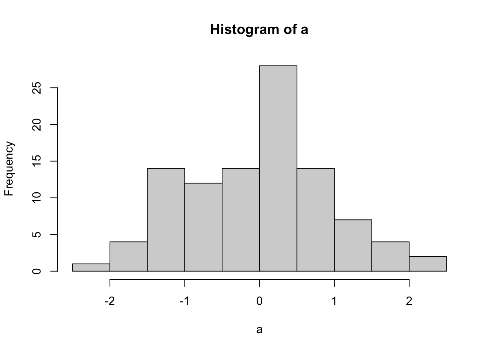

library(ggplot2)ggplot basic examples
Checklist of ggplot2 skills
If you are confident that you can accomplish the items below, then you are well on your way to becoming proficient in ggplot2.
Making graphs
- Make a scatterplot between an x an y variable
- add a regression line to plot
- Make a bar graph
- for one factor with multiple levels
- for two factors, each with multiple levels
- for three or more factors (using facet_wrap)
- Make a line graph
- for one factor with multiple levels
- for two factors, each with multiple levels
- for three or more factors (using facet_wrap)
- Add error bars to bar or line graph
- Make a histogram
Customizing graphs
- Edit title
- Edit y-axis label
- Edit x-axis label
- Change theme (e.g., theme_classic)
- Change size of figure (width, height)
- Change y-axis range
- re-order categorical factor levels
Example code
Make sure you load ggplot2 before you try to use it.
Scatterplot
# Create dataframe
a <- c(1, 2, 3, 2, 3, 4, 5, 4)
b <- c(4, 3, 4, 3, 2, 1, 2, 3)
plot_df <- data.frame(a, b)
# basic scatterplot
ggplot(plot_df, aes(x = a, y = b)) +
geom_point()
# customize, add regression line
ggplot(plot_df, aes(x = a, y = b)) +
geom_point(size = 2) +
geom_smooth(method = lm) +
coord_cartesian(xlim = c(0, 7), ylim = c(0, 10)) +
xlab("x-axis label") +
ylab("y-axis label") +
ggtitle("I made a scatterplot") +
theme_classic(base_size = 12) +
theme(plot.title = element_text(hjust = 0.5))`geom_smooth()` using formula = 'y ~ x'
bar graph
1 factor
#Create a dataframe
factor_one <- as.factor(c("A", "B", "C"))
dv_means <- c(20, 30, 40)
dv_SEs <- c(4, 3.4, 4)
plot_df <- data.frame(factor_one,
dv_means,
dv_SEs)
# basic bar graph
ggplot(plot_df, aes(x = factor_one, y = dv_means)) +
geom_bar(stat = "identity")
# adding error bars, customizing
ggplot(plot_df, aes(x = factor_one, y = dv_means)) +
geom_bar(stat = "identity") +
geom_errorbar(aes(ymin = dv_means - dv_SEs,
ymax = dv_means + dv_SEs),
width = .2) +
coord_cartesian(ylim = c(0, 100)) +
xlab("x-axis label") +
ylab("y-axis label") +
ggtitle("I made a bar graph") +
theme_classic(base_size = 12) +
theme(plot.title = element_text(hjust = 0.5))
2 factor
#Create a dataframe
factor_one <- rep(as.factor(c("A", "B", "C")), 2)
factor_two <- rep(as.factor(c("IIA", "IIB")), 3)
dv_means <- c(20, 30, 40, 20, 40, 40)
dv_SEs <- c(4, 3.4, 4, 3, 2, 4)
plot_df <- data.frame(factor_one,
factor_two,
dv_means,
dv_SEs)
# basic bar graph
ggplot(plot_df,
aes(
x = factor_one,
y = dv_means,
group = factor_two,
color = factor_two
)) +
geom_bar(stat = "identity", position = "dodge")
# adding error bars, customizing
ggplot(
plot_df,
aes(
x = factor_one,
y = dv_means,
group = factor_two,
color = factor_two,
fill = factor_two
)
) +
geom_bar(stat = "identity", position = "dodge") +
geom_errorbar(
aes(ymin = dv_means - dv_SEs,
ymax = dv_means + dv_SEs),
position = position_dodge(width = 0.9),
width = .2,
color = "black"
) +
coord_cartesian(ylim = c(0, 100)) +
xlab("x-axis label") +
ylab("y-axis label") +
ggtitle("Bar graph 2 factors") +
theme_classic(base_size = 12) +
theme(plot.title = element_text(hjust = 0.5))
3 factor
#Create a dataframe
factor_one <- rep(rep(as.factor(c("A", "B", "C")), 2), 2)
factor_two <- rep(rep(as.factor(c("IIA", "IIB")), 3), 2)
factor_three <- rep(as.factor(c("IIIA", "IIIB")), each = 6)
dv_means <- c(20, 30, 40, 20, 40, 40,
10, 20, 50, 50, 10, 10)
dv_SEs <- c(4, 3.4, 4, 3, 2, 4,
1, 2, 1, 2, 3, 2)
plot_df <- data.frame(factor_one,
factor_two,
factor_three,
dv_means,
dv_SEs)
# basic bar graph
ggplot(plot_df,
aes(
x = factor_one,
y = dv_means,
group = factor_two,
color = factor_two
)) +
geom_bar(stat = "identity", position = "dodge") +
facet_wrap( ~ factor_three)
Line Graph
1 factor
#Create a dataframe
factor_one <- as.factor(c("A", "B", "C"))
dv_means <- c(20, 30, 40)
dv_SEs <- c(4, 3.4, 4)
plot_df <- data.frame(factor_one,
dv_means,
dv_SEs)
# basic line graph
ggplot(plot_df, aes(x = factor_one, y = dv_means, group = 1)) +
geom_point() +
geom_line()
# adding error bars, customizing
ggplot(plot_df, aes(x = factor_one, y = dv_means, group = 1)) +
geom_point() +
geom_line() +
geom_errorbar(aes(ymin = dv_means - dv_SEs,
ymax = dv_means + dv_SEs),
width = .2) +
coord_cartesian(ylim = c(0, 100)) +
xlab("x-axis label") +
ylab("y-axis label") +
ggtitle("I made a line graph") +
theme_classic(base_size = 12) +
theme(plot.title = element_text(hjust = 0.5))
2 factor
#Create a dataframe
factor_one <- rep(as.factor(c("A", "B", "C")), 2)
factor_two <- rep(as.factor(c("IIA", "IIB")), 3)
dv_means <- c(20, 30, 40, 20, 40, 40)
dv_SEs <- c(4, 3.4, 4, 3, 2, 4)
plot_df <- data.frame(factor_one,
factor_two,
dv_means,
dv_SEs)
# basic line graph
ggplot(
plot_df,
aes(
x = factor_one,
y = dv_means,
group = factor_two,
color = factor_two,
linetype = factor_two
)
) +
geom_point() +
geom_line()
Histogram
base R
a <- rnorm(100, 0, 1)
hist(a)
score <- rnorm(100, 0, 1)
n <- 1:100
plot_df <- data.frame(score, n)
ggplot(plot_df, aes(x = score)) +
geom_histogram(bins = 10,
color = "white")